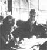

As we've noted several times in these pages, Helen and Scott Nearing are light years ahead of most of us when it comes to getting back to the land and living a life of voluntary simplicity. As well they should be, since they originally homesteaded a run-down farm in Vermont 's Green Mountains away back in the autumn of 1932.
Life was good for the Nearings on that mini-farm ... until the slopes around them exploded into ski resorts in the early 50's, forcing Helen and Scott to move on to a rocky inlet on the coast of Maine and start all over again.
Naturally (in more ways than one), the Nearings have learned a few things about homesteading and getting back to basics over the years. And, lucky for all of us, they've agreed to share some of that knowledge with MOTHER's readers in a regular question and answer column. If you'd like to get in on the action, send your question or questions about self-sufficient living on the land to Helen and Scott Nearing, THE Mother Earth News,% P.O. Box 70, Hendersonville, N.C. 28739. And please don't expect personal replies to your queries. The most important and most frequently asked questions will be answered here-and here only-where we all can read what the Nearings have to say.
My husband and I have enjoyed your books very much. We'd like to know how much of your "off season" food supply is made up of canned, dried, or frozen produce, and which-if any-of these home food preservation methods you find most satisfactory?
During the "off season", our sunheated greenhouse provides us with such green vegetables as leeks, parsley, and hardy lettuces. (See our book, Building and Using Our Sun-Heated Greenhouse.) We also eat kale, broccoli, and spinach out of the open garden ... when it's not heavily Iced or snowed under.
We freeze a few things - asparagus, blueberries, raspberries, shell beans, and tomato juice-and we dry lots of beans, peas, and herbs for winter use. In addition, we can (by the open-kettle method) all the poor-quality apples that won't keep (this results In up to 100 quarts of applesauce) ... the same amount of rose-hip juice for our vitamin C ... and another 100 quarts of thick soup stock made up of tomatoes, onions, peppers, celery, and parsley. (We also use any juice left over from the soup to make about 50 quarts of tomato juice.)
We find all these methods of food preservation equally satisfactory.
I am 16 years old and would like-someday-to get back to the land and live a relatively self-sufficient existence. Do you believe that this dream will still be possible to achieve (and within the income range of an average American single woman) in about 10 years?
It's really hard to tell just what's going to happen over the next 10 years ... in this nation and in the world! Surely, the coming decade will be a disruptive and disrupted time. Also, you-as "an average American single woman" - may well be married with a couple of children.
In these days, the principal obstacle for anyone who attempts to homestead Is the high cost of land ... which wasn't the caw when we got started In the 1930's. One way to overcome this very real problem Is to work out some sort of cooperative arrangement with other folks, so that you can buy and own land collectively.
I really enjoyed reading Living the Good Life, but it did raise one question: Since you keep no animals, does this mean you also use no manure on your garden? If so, what do you substitute for this fine, natural fertilizer? Also, do you have any system to make use of your gray water" from laundry, etc.?
During the 25 years that we've been gardening in Maine, we've used no animal manures or animal derivatives (such as bone meal, dried blood, or other slaughterhouse products) on our land.
Instead of that, all our fertilizer Is made from compost ... with the followIng ingredients either added to the compost pile or scattered in the garden: cottonseed, linseed, or soybean oil (preferably the last), finely ground limestone, ground phosphate rock, and granite dust. Every one of these, of course, Is a natural product.
And, no ... we have no system which uses "gray water". It simply goes into a septic tank.
I would be interested to know how you feel about insurance (health, life, home, etc.). Do you carry any now, and-if not -what are your reasons for not doing so?
Scott's father never carried any Insurance policies. Instead, he maintained an "Insurance fund" of his own that was designed to meet the costs of any accidents or emergencies.
Helen's father, on the other hand, insured everything movable and Immovable ... even a pianola he lent to a friend. He felt justified after the pianola was destroyed In a fire and he collected ample funds to cover the loss.
We carry a general household policy, which covers all contingencies (fire, theft, and so forth), and we both have small life insurance policies that will pay for cremation, etc. As to health ... we keep out of hospitals, away from doctors, and stay well. We have no Blue Cross, but (as a part of our Social Security), we are covered by Medicare. So far, we haven't needed it.
It's becoming apparent that a self-sufficient lifestyle is the only sane way to
live. I can think of several ways to earn some of the "cold cash" that would still be essential to me in such an environment, but I would be pleased to know what you do to "bring home the bacon".
Also, you mentioned in an earlier column that Maine is your "assigned post". Could you explain that "assignment", and the job you feel you have to do?
In Vermont, we covered our cash needs with our maple syrup and sugar business, which paid all normal expenses Involved in running the farm. Here in Maine, we have a quarter-acre of hybrid blueberries, and the sale of these takes care of seed, taxes, and other overhead.
Maine Is not our "assigned post" we could do the same job in almost any country situation. Our "assigned post?' Is to be alive and active on earth In this 20th century, and to teach. We instruct by various means: by the example of our homestead life, by writing, and by speaking. This is the kind of contribution that we aim to make wherever we are.
At the Mansfield Homesteaders' Conference, I was able to talk with Helen, briefly, about a topic which I think she referred to as "gump" . . . that combination of being able to create a plan and bring that plan into being with vigor.
One of the greatest difficulties faced by new back-to-the-landers seems to be in accomplishing their goals in the time estimated. I have found Scott's chapter on "Seven Roadblocks" (from The Conscience of a Radical) very helpful. Would you discuss these roadblocks and how they apply to reasonably healthy, intelligent people who try to live independently on the land?
Chapter Three of The Conscience of a Radical Is headed "Seven Roadblocks to the Good Life". It contains 31 printed pages of very specific analyses and suggestions which, unfortunately, cannot easily be summarized any further. But anyone who sends $1.00 to Social Science institute, Harborside , Maine 04642, can have the book, postpaid ... Including Chapter Three, which Is a detailed discussion of just that topic!
|
 With a little huntin'and some tender loving care-you can have a shopful of refurbished tools. |
|
|